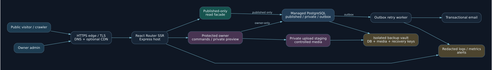
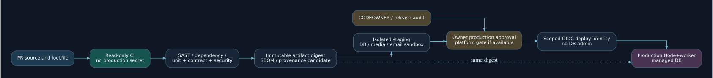
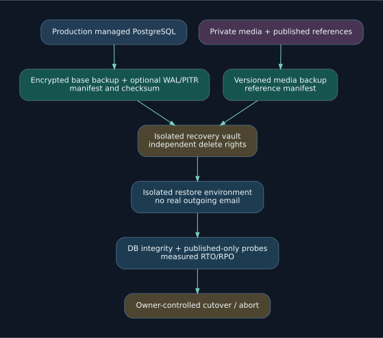
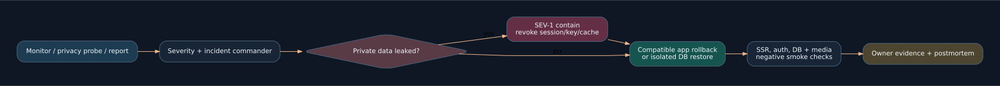

DEVFOLIO OS / Technical design / Phase 03.6
Deployment, Infrastructure, Reliability & DevSecOps
Complete **proposed design** handoff. Responsive diagrams, editable source, protection matrices and operational runbooks. No provider accounts, databases, CI jobs or production services are deployed by this archive.
12 decision records
30 security/operations controls
96 QA cases — NOT_RUN
4 architecture diagrams
Formal sign-off pending: SRS v1.1, MFA strategy, provider/region, restore targets and privacy retention. A ZIP integrity check does not constitute a restore or security test.
Start reading
Executive summary ↗Hosting and deployment ↗CI/CD & supply chain ↗Restore and backups ↗SLO and alerting ↗Owner checklist ↗QA register ↗Source hashes ↗
Architecture diagrams
01 DEPLOYMENT TOPOLOGY

02 CI CD TRUST

03 BACKUP DISASTER RECOVERY

04 INCIDENT AND ROLLBACK

Next milestone
Phase 03.7 integrates all design proposals into a final architecture handoff, after explicit owner decisions. Phase 04 executes real deployment and runtime QA.